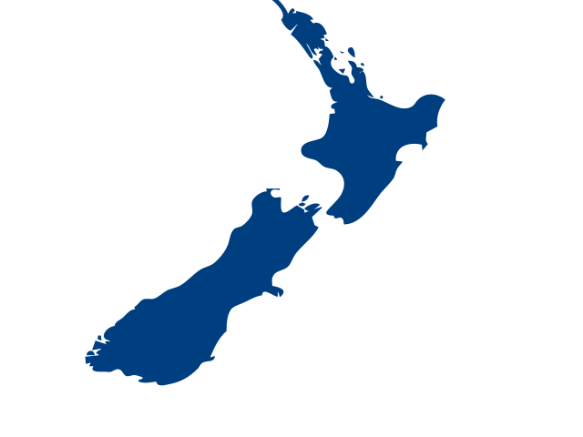

About
New Zealand (Māori: Aotearoa [aɔˈtɛaɾɔa]) is an island country in the southwestern Pacific Ocean. It consists of two main landmasses—the North Island (Te Ika-a-Māui) and the South Island (Te Waipounamu)—and over 700 smaller islands. It is the sixth-largest island country by area and lies east of Australia across the Tasman Sea and south of the islands of New Caledonia, Fiji, and Tonga. The country's varied topography and sharp mountain peaks, including the Southern Alps, owe much to tectonic uplift and volcanic eruptions. New Zealand's capital city is Wellington, and its most populous city is Auckland.
The islands of New Zealand were the last large habitable land to be settled by humans. Between about 1280 and 1350, Polynesians began to settle in the islands and then subsequently developed a distinctive Māori culture. In 1642, the Dutch explorer Abel Tasman became the first European to sight and record New Zealand. In 1769 the British explorer Captain James Cook became the first European to set foot on and map New Zealand. In 1840, representatives of the United Kingdom and Māori chiefs signed the Treaty of Waitangi which paved the way for Britain's declaration of sovereignty later that year and the establishment of the Crown Colony of New Zealand in 1841. Subsequently, a series of conflicts between the colonial government and Māori tribes resulted in the alienation and confiscation of large amounts of Māori land. New Zealand became a dominion in 1907; it gained full statutory independence in 1947, retaining the monarch as head of state. Today, the majority of New Zealand's population of 5.25 million is of European descent; the indigenous Māori are the largest minority, followed by Asians and Pasifika. Reflecting this, New Zealand's culture is mainly derived from Māori and early British settlers, with recent broadening of culture arising from increased immigration to the country. The official languages are English, Māori, and New Zealand Sign Language, with the local dialect of English being dominant.
